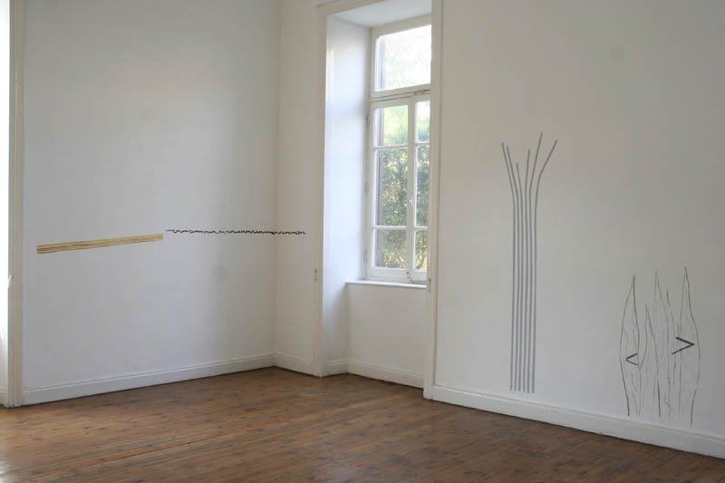

By Ismail Fayed

Installation shot from Barbara Armbruster's installation, taken from the artist's website. All rights reserved to the artist.
In the latest Townhouse group exhibition "Sound Construction," the overarching theme seems to be how many ways can sound be perceived and how do the immediate surroundings affect its perception.
The artists involved, all from different countries, present their own understanding of how sound can be digested in a particular context. Their questions mainly focus on the concept of the city, the overpopulated city with its cacophony of sounds and voices; a place they call "the mega city."
Cairo is a perfect example. The participating artists attempt to contest the meaning and significance of all these sounds to the people residing in this space. While what people perceive visually dictates a sequence of cues and a set of dynamics of interaction with the space, sound as well creates a set of cues and initiates a pattern of engagement with that same space.
Swiss artist Beat Streuli's video installation at the factory space of the Townhouse Gallery posed an interesting challenge for viewers. A 30-minute video was played on loop, one time with sound and another with no audio. The video was played across four TV screens and the sound was not synchronized so that the viewer might be looking at one silent image and hearing the sound from a different TV screen.
The video was composed of simple footage of one of Cairo's main streets; people walking back and forth, across the hustle and bustle of downtown Cairo. All kinds of sounds interplay in this visual setting. By taking out the actual sound and introducing it in a different, desynchronized way, Streuli forces the audience to reexamine what they make of sound. How do they regard it?
People talking in the streets, cars driving by, noise coming from shops, the isolated image and the imposed sound create a certain audio-visual tension that makes the audience wonder if sound could be perceived at on auditory level.
In the same space, artist Marianne Eigenheer, also from Switzerland presents an installation of musical chairs. On three TV screens, she plays an edited video showing a series of images of chairs simultaneously followed by her impression of these chairs in drawing.
Eigenheer's video has no sound, just a series of images, dissolving into crude drawings. The chairs projected are a comprehensive assortment of all kinds of seats found on the streets of Cairo: wooden chairs, plastic chairs, leather chairs, antique chairs, chairs in furniture shops, for example. In a subtle build up, Eigenheer weaves little by little an audio-visual narrative of the street.
While there is no sound to accompany the images, the crude drawings depict a certain kind of movement that can almost be heard. The sound is atomically generated after one glance at the image of a chair followed by a look at the drawings. Eigenheer's work uses the power of suggestion to its fullest and asks the audience to trust what they see. The sound they know is essentially inherent in the space all around them.
On the first floor of the Townhouse Gallery, the text installation of British artist Zoe Irvine, that centers on her own experience, as someone who grew up in Egypt and lived in Britain, is shown. The text is projected on the wall and the audio is optional. I read the text first without the sound, then tried to listen to the passage via the headphones.
Irvine tries to reconcile the irreconcilable, and while she feels perhaps that she could never be truly understood (either by Egyptians or the British), she can also never be heard. It seems as if Irvine is trying to create an imagined sound or language through which her conflicting thoughts can be unleashed; an imaginary sound that the audience is left to explore.
German artist Barbara Armbruster's contribution to the exhibition is a photo/video installation of a series of images and mini videos, projected at different speeds and different timing, again with optional audio. At one point in time, images flip at an accelerating rate, then come to a complete halt, then flip before as a mini video is played followed by an image and so on.
Armbruster tries to bring a wide scope of images and video sequences while isolating the sound to allow the audience to process the original sound in a completely new way. Audiences then create their audio cues and figure out the invisible force that puts sound and images together.
While the images of Cairo have all been seen before, the idea behind these constructions is not to capture Cairo visually, but rather to introduce a whole new element in seeing the world around us.